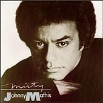

|
A primeira cena do episódio mostra o
comandante Riker dando os primeiros acordes de uma música, mas
tropeçando logo em seguida numa nota mais aguda. Mais tarde,
quando está ensinando algumas técnicas do instrumento ao
"filho" adolescente --supostamente dezesseis anos no
futuro-- ele erra a mesma nota da mesma música.
 Trata-se
de "Misty", um clássico da música popular
norte-americana, composta em 1954 por Erroll Garner.
Posteriormente, a canção teve várias versões diferentes, na
voz e nos instrumentos dos mais diversos intérpretes. Foi em
1959, porém, que "Misty" ganhou sua versão mais
famosa, na voz de Johnny Mathis. Oriundo da mesma escola de Nat
King Cole e outros grandes cantores dos anos 40 e 50, Johnny
Mathis foi uma das últimas vozes românticas da música
norte-americana antes que o rock viesse dominar o cenário musical
na década de 60.
A música "Misty" pode
ser encontrada no álbum do mesmo nome, gravado por Johnny Mathis
em 1992 (foto), ou na coletânea Ultimate Collection, de
1998.
William Riker parou a música logo
no início, mas se você quiser ouvir a versão completa com
Johnny Mathis, acompanhando a letra abaixo, clique
aqui (Mp3 - 3,3Mb).
Para ouvir uma versão
instrumental, clique aqui (MIDI - 21Kb).
MISTY
Johnny Mathis
Look at me,
I'm as helpless as a kitten up a tree
And I feel like I'm clinging to a cloud
I can't understand,
I get misty just holding your hand.
Walk my way,
And a thousand violins begin to play
Or it might be the sound of your hello
That music I hear,
I get misty the moment you're near
You can say that you're leading me on
But it's just what I want you to do
Don't you notice how hopelessly I'm lost
That's why I'm following you.
On my own,
Would I wander through this wonderland alone
Never knowing my right foot from my left,
My hat from my glove,
I'm too misty, and too much in love.
|